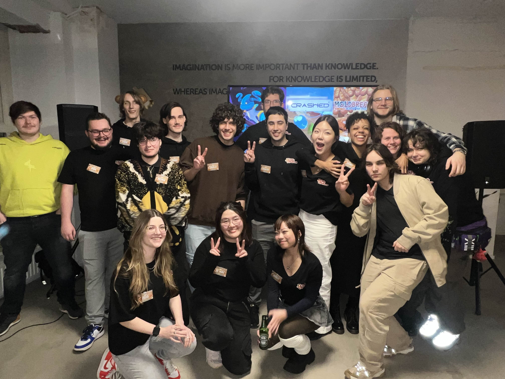

During my study, I had the opportunity to work on two game projects. A 2D game, Foonktasm, and A 3D game, Moldbreaker: Rise of the Loaf, where I primarily focused on art. In fact, for Moldbreaker, I had the role of Art Director, giving me the chance to lead and shape the game's visual style. Of course, I couldn’t have made these games without my amazing classmates, who helped me make these games possible. This experience allowed me to create two incredible games—something I’ve dreamed of since I was a child. A huge thank you to Lux Studio and Silly Business for making these projects possible! Above, you can check out both games if you’d like to learn more about them.
